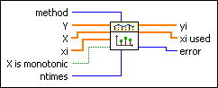
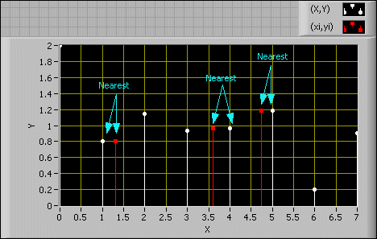
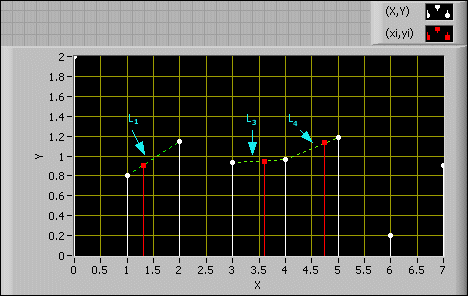
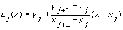
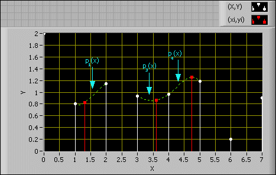
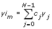
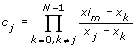

Interpolate 1D VI
Owning Palette: Interpolation & Extrapolation VIs
Requires: Full Development System
Performs one-dimensional interpolation using a selected method based on the lookup table defined by X and Y.
Details Example

 Add to the block diagram Add to the block diagram |
 Find on the palette Find on the palette |
 |
method specifies the interpolation method.
| 0 | nearest—Chooses the Y value corresponding to the X value that is nearest to the current xi value. LabVIEW sets the interpolated value to the nearest data point. | | 1 | linear—Sets the interpolated values to points along the line segments connecting the X and Y data points. | | 2 | spline—Guarantees that the first and second derivatives of the cubic interpolating polynomials are continuous, even at the data points. | | 3 | cubic Hermite—Guarantees that the first derivative of the cubic interpolating polynomials is continuous and sets the derivative at the endpoints to certain values in order to preserve the original shape and monotonicity of the Y data. | | 4 | Lagrange—Uses the barycentric Lagrange interpolation algorithm. |
|
 |
Y specifies the array of tabulated values of the dependent variable.
|
|
X specifies the array of tabulated values of the independent variable. The length of X must equal the length of Y.
|
|
xi specifies the array of values of the independent variable at which LabVIEW computes the interpolated values yi of the dependent variable.
|
 |
X is monotonic specifies whether the values in X are increasing monotonically with the index. If X is monotonic is TRUE, the interpolation algorithm can avoid sorting X and reordering Y accordingly. If X is monotonic is FALSE, this VI sorts the X input arrays to be in ascending order and then reorders Y accordingly.
|
|
ntimes determines the interpolation xi locations, yielding interpolated values between every Y element when xi is empty. Interpolation between Y elements is repeated ntimes. The VI ignores ntimes if you wire the xi input.
|
 |
yi returns the output array of interpolated values that correspond to the xi independent variable values.
|
|
xi used is the 1D array of values of the independent variable at which interpolated values of the dependent variable yi are computed.
If xi is empty, xi used returns (2ntimes – 1)*(N – 1) + N points with (2ntimes – 1) points located evenly between each two adjacent elements in X, where N is the length of X. If you wire the xi input, this VI ignores ntimes, and xi used is the same as xi.
|
 |
error returns any error or warning from the VI. You can wire error to the Error Cluster From Error Code VI to convert the error code or warning into an error cluster.
|
The VI accepts tabulated dependent and independent variable values Y and X and provides interpolated values yi corresponding to each xi location. The VI finds each value of xi in X and uses the relative location in X to find the interpolated value yi at the same relative location in Y.
Interpolate 1D VI allows you to choose between five different interpolation methods. The following sections contain more information about each of these methods. As you read these sections, consider the following situation:
- X and Y already are in ascending order.
- xj and yj are the elements of X and Y, respectively.
- xim is the m-th element in xi, and yim is the corresponding m-th dependent value in yi.
Nearest Method
The nearest method finds the point nearest to xi in X and then assigns the corresponding y value in Y to yi, as shown in the following graph.

Linear Method
The linear method interpolates yi on the line segment that connects the two points (xj, xj + 1) when xi is located between the two points (xj, xj + 1) in X, as shown in the following graph.

In the previous graph, the following equation is true:

Spline Method
The spline method refers to the cubic spline method. With this method, the VI derives a third-order polynomial for each interval between two adjacent points. The polynomials meet the following conditions:
- The first and second derivatives at xj are continuous.
- The polynomials pass all the specified data points.
- The second derivatives at the beginning and end are zero.
The following graph illustrates the cubic spline method.

In the previous graph, Pj(x) is the third-order polynomial between two adjacent points, (xj, yj) and (xj + 1, yj + 1).
Refer to A Practical Guide to Splines in the Mathematics Related Documentation topic for more information about the cubic spline method.
 | Note If you choose the spline method, this VI returns the same results as the Spline Interpolation 1D VI with natural spline boundary conditions. |
Cubic Hermite Method
The cubic Hermitian spline method is the piecewise cubic Hermitian interpolation. This method derives a third-order polynomial in Hermitian form for each interval and ensures only the first derivatives of the interpolation polynomials are continuous. Compared to the cubic spline method, the cubic Hermitian method has better local property. In other words, if you change one data point xj, the effect on the interpolation result lies in the range between [xj – 1, xj] and [xj, xj + 1].
Refer to A Practical Guide to Splines in the Mathematics Related Documentation topic for more information about the cubic Hermitian method.
Lagrange Method
The Lagrange method derives a polynomial of order N – 1 that passes all the N points specified in X and Y, where N is the length of X and Y. This method is a reformulation of the Newton polynomial that avoids the computation of divided differences. The following equation defines the Lagrange method:
, where 
When you choose between the five interpolation methods in this VI, the following tips might be useful:
- The nearest method and the linear method are simple to use but are too inaccurate in most applications.
- The spline method returns the smoothest result out of all five methods.
- The cubic Hermite method has better local property than the spline method and the Lagrange method.
- The Lagrange method is simple to implement but not suitable for exploratory calculation. When compared to the spline method, the Lagrange method yields the interpolation result with extreme derivatives.
Refer to the 1D Interpolation VI in the labview\examples\Mathematics\Interpolation directory for an example of using the Interpolate 1D VI.
 Open example Find related examples
Open example Find related examples